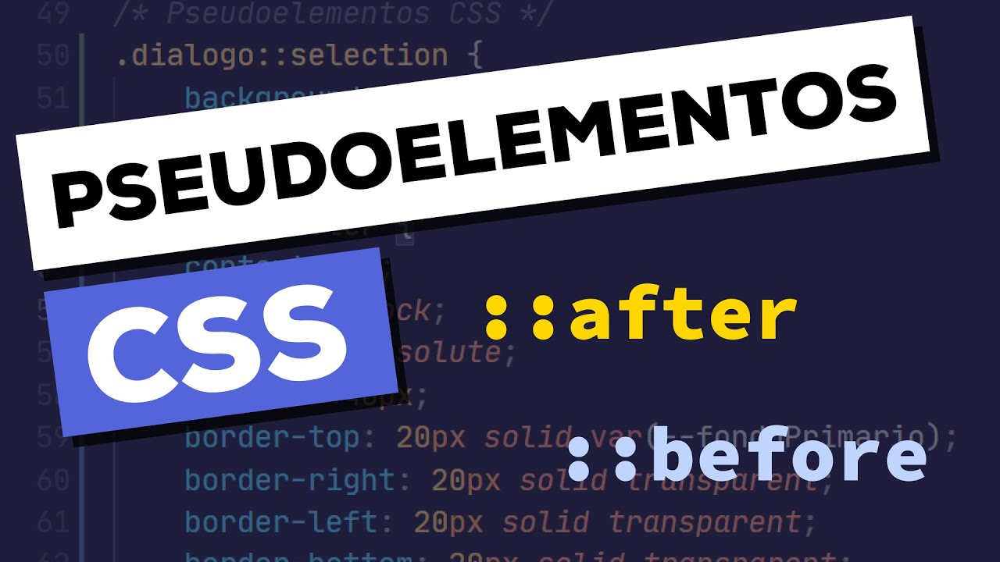

Ya NO hablamos de nuevas versiones de CSS. Ya que no es necesario, digamos que ahora CSS esta
"dividido" a lo que se le llaman módulos, enfocados en propiedades para un uso especifico, por ejemplo:
FlexBox, Grid, transiciones, animaciones, etc... por lo que no todos avanzan al mismo ritmo también puede que
vayan saliendo nuevos, eliminando y demás. Por lo que los módulos Iran avanzando cada uno a su ritmo y estos si
tienen nuevas versiones.
@import url(style.css);
Con esta regla podemos llamar otras hojas de estilo. Sin embargo,
no es recomendado ya que esta es una propiedad que bloquea, se decir, que nuestro navegador no seguirá
con la carga de nuestro documento hasta que esta propiedad no se haya leído. Esta nos puede traer muchos
problemas sobre todo cuando queremos que nuestros proyectos crezcan.
Selectores
Un selector CSS es la primera parte de una regla CSS. Es un patrón de elementos y otros términos que indican
al navegador qué elementos HTML se seleccionan para aplicarles una regla que incluye los valores de las
propiedades CSS
P.Clases
Una pseudoclase es un selector que marca los elementos que están en un estado específico, por ejemplo, los que
son el primer elemento de su tipo, o aquellos por los que el cursor les pasa por encima
P.Elementos

Los pseudoelementos son una característica de CSS que permite hacer referencias a «comportamientos virtuales
no tangibles», dicho de otra forma, seleccionar y dar estilo a elementos que no existen en el HTML, o que no
son un simple elemento en sí
Algoritmo
Es la jerarquía con la que el navegador aplica los estilos al documento HTML
Reset-Normalize
Estilos que podemos aplicar a nuestro documento al iniciar cualquier proyecto
Prefijos
Un prefijo se antepone a una regla CSS destinado a que dicha regla sea leída y aplicada exclusivamente por un
navegador (por ejemplo Chrome) pero no por el resto de navegadores
Modelo de Caja
La manera en que el navegador representa todas las etiquetas HTML que están dentro del body
Float & Clear
Float Clear
Colapso
El colapso de márgenes sucede cuando dos elementos bloque adyacentes tienen un determinado valor de margin ,
entonces estos márgenes se solapan en un solo valor, el mayor de ambos
Centrar Cajas
¿Te has preguntado como centrar nuestro contenido perfectamente? Precisamente esto es lo que he aprendido a
hacer y te lo he querido compartir
Posicion
Tenemos varias formas de posicionar nuestros elementos con css, en este articulo compartiré por lo menos los
mas populares
Z-index
Esta propiedad de css nos permite determinar la "profundidad" de nuestros elementos
Display
Establece como se trata un elemento, si en bloque o en linea, ¿Tenemos mas variantes? pues aquí lo sabremos
Overflow
La propiedad overflow especifica si recortar el contenido o agregar barras de desplazamiento cuando el
contenido de un elemento es demasiado grande para caber en el área especificada.
Border
Es una propiedad abreviada para establecer el mismo ancho, color y estilo para los cuatro bordes de un cuadro
Margin-Padding
Con estas propiedades definimos los espacios que nuestros elementos tendrán por dentro y fuera
Colores
El color es una si no la parte mas importante al momento de decorar nuestro sitio web, y para ello tenemos
varias formas de controlar y aplicar colores con CSS
Unidades CSS
En CSS se utilizan dos longitudes diferentes: relativa y absoluta. Es importante conocer la diferencia para
entender qué dimensiones van a tener las cosas
Variables
Las Custom Properties (a veces denominadas variables CSS) son entidades definidas por los autores de
CSS que contienen valores específicos para reutilizar en un documento.
Funciones
Las funciones CSS se utilizan para calcular o asignar un valor a los elementos HTML
Font Text
Para controlar nuestro texto tenemos varias propiedades para hacerlo, miraremos algunas de ellas
Border & Outline
Estas propiedades son esenciales cuando queremos delimitar nuestro elemento y darle un efecto fantástico
Background
Al definir una imagen de fondo en nuestros elementos se nos habilitan distintas propiedades para manipularla.
Imágenes
Las imágenes son una manera sencilla y directa de dar información, para ello contamos con propiedades en CSS.
Para que podamos dar nuestro mensaje de una forma mejor
Listas
Podemos llevar nuestras listas al siguiente nivel haciendo uso de las herramientas que CSS no brinda
Tablas
Podemos hacer uso de CSS para que nuestra tabla quede mas elegante y pueda brindar al usuario la información
mas clara y legible
Formulario
Creamos un formulario y le aplicamos estilos típicos para que quede mas elegante y mucho mejor en su diseño